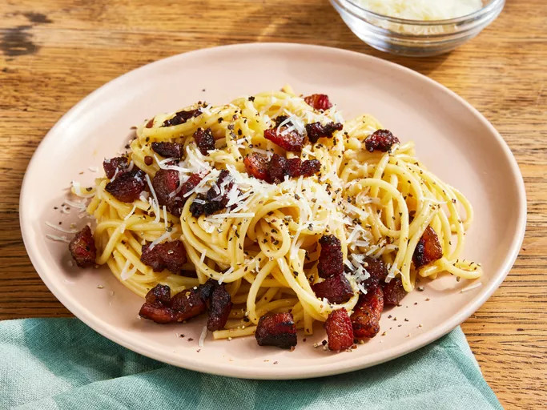

Spagehetti Carbonara Recipe

Description
Simple easy recipe for Carbonara
Ingredients
- 2 teaspoons Olive oil
- 1 pound diced Guanciale (cure pork cheek) or unsmoked bacon or pancetta
- 16 ounce of Spaghetti
- 3 large eggs
- 10 tablespoons of Parmesan Cheese
- Salt
- Pepper
- Skillet/Frying pan
- Spatula
- Paper towels
- Large pot
- medium-sized bowl
- tea spoon
- Plate
Steps
- Heat olive oil into the skillet on medium heat.
- Add the diced Guanciale to cook. Turn it occasionally as needed until evenly brown and crispy. You can expect it to take 5 to 10 minutes.
- After cooking the Guanciale, turn off the heat and drain it on paper towel.
- Cook the Spagehetti in the large pot with salted water.
- Whisk the eggs, half of the cheese with some black pepper in the bowl until the egg mixture is smooth and creamy
- Pour egg mixture over pasta, stirring quickly, until creamy and slightly cooled. Stir in guanciale.
- Top with remaining cheese and more black pepper.